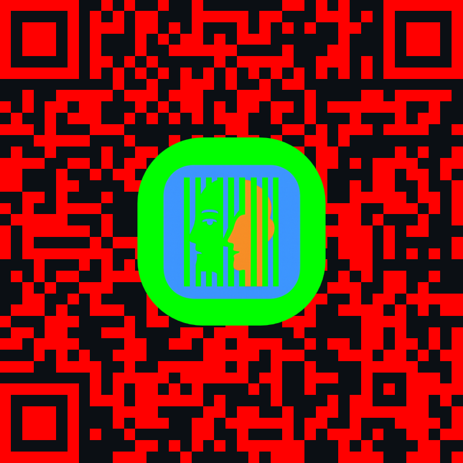

Application web permettant de générer des images lenticulaires à partir de deux images sources strictement identiques en taille et cadrage.
🚀 Ouvrir l’applicationGénérer une image lenticulaire imprimable (A5 / A4, portrait ou paysage) avec réglages : unités, nombre de bandes et format d’export (PNG / JPG / WEBP).
QR Code pour accès rapide depuis un smartphone

• Deux images strictement identiques (dimensions et cadrage)
• Réglages complets : format, orientation, unités, bandes
• Export adapté à l’impression ou au web